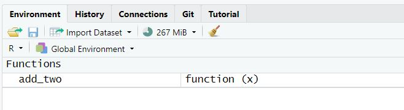

countdown(minutes = 3)03:00
Today we will…
[] refresherseq_along()if() and else if() refresherFunctions allow you to automate common tasks!
Writing functions has three big advantages over copy-paste:

![Illustration of R function syntax. The image explains the parts of a function in R using labeled arrows and colors. At the top, the name 'func_name' is assigned using '<-' to a function. An arrow points to 'func_name' with the label 'assign the function a NAME.' The keyword 'function' is highlighted, with an arrow labeled 'indicate we are creating a function.' The parentheses contain 'func_arg1, func_arg2,' which are labeled as 'specify ARGUMENTS of the function.' The body of the function is placed between curly brackets and labeled 'write the BODY of the function between curly brackets.' Finally, the 'return(func_value)' statement is labeled 'return a value as the OUTPUT of the function.](images/func_structure.png)
Write a function named add_two() that will add 2 to whatever number is input.
countdown(minutes = 3)03:00
. . .
In what ways are your functions the same? In what ways do they differ?
The name of the function is chosen by the author.
add_two <- function(x){
return(x + 2)
}. . .
The name you give to a function does not affect what the function does.
add_three <- function(x){
return(x + 7)
}add_three(5)[1] 12The argument(s) of the function are chosen by the author.
. . .
x, y, z – vectorsdf – data framei, j – indicesadd_two <- function(x){
return(x + 2)
}What if we wanted to write a more general function, named add_something(). The function would take two inputs:
x the vector to add tosomething the value to add to xHow would your function change?
countdown(minutes = 2)02:00
If we do not supply a default value when defining the function, the argument is required when calling the function.
add_something <- function(x, something){
x + something
}add_something(x = 2,
something = 3)[1] 5add_something(x = 2)Error in add_something(x = 2): argument "something" is missing, with no defaultIf we supply a default value when defining the function, the argument is optional when calling the function.
add_something <- function(x, something = 2){
return(x + something)
}add_something(x = 5,
something = 6)[1] 11If a value is not supplied, something defaults to 2.
add_something(x = 5)[1] 7A lot of the functions we’ve been working with so far actually have a lot of optional arguments:
mean(x,
trim = 0,
na.rm = FALSE, ...)max(..., na.rm = FALSE)
min(..., na.rm = FALSE)geom_point(
mapping = NULL,
data = NULL,
stat = "identity",
position = "identity",
...,
na.rm = FALSE,
show.legend = NA,
inherit.aes = TRUE
){ }The body of the function is where the action happens.
Your function will give back what would normally print out…
add_something <- function(x, something = 2){
x + something
}7 + 2[1] 9add_something(7)[1] 9. . .
…but some of us might prefer an explicit return().
return()If you are coming to R from a background in Python, C, or Java then an explicit return may feel more natural to you.
return()s. . .
safe_square <- function(x) {
if (!is.numeric(x)) return(NA)
x^2
}✅ Pros of Using return()
⚠️ Cons of Using return()
✅ Pros of Implicit Return (no return())
⚠️ Cons of Implicit Return
When you have a concept that you want to turn into a function…
Write a simple example of the code without the function framework.
Generalize the example by assigning variables.
Write the code into a function.
Call the function on the desired arguments
. . .
This structure allows you to address issues as you go.
[ ]
TRUE, FALSE)1, 2, 3). . .
seq_along() functionx <- 15:25
x [1] 15 16 17 18 19 20 21 22 23 24 25seq_along(x) [1] 1 2 3 4 5 6 7 8 9 10 11above_average()Goal: Keep only the elements of
xgreater than the mean.
. . .
Fill in the code to create a function named above_average(). The function should keep only the elements of x greater than the mean.
above_average <- function(x) {
# Step 1: Compute mean of x
# Step 2: Subset x to keep only values > mean
# Step 3: Return the result
}countdown(minutes = 5)05:00
Step 1: Find locations where values of x are larger than the mean
x > mean(x) [1] FALSE FALSE FALSE FALSE FALSE FALSE TRUE TRUE TRUE TRUE TRUE. . .
Step 2: Use this output to extract the desired values from x
x[x > mean(x)][1] 21 22 23 24 25. . .
Step 3: Make a function
above_average <- function(x) {
x[x > mean(x)]
}Step 1: Find indices where values of x are larger than the mean
which(x > mean(x))[1] 7 8 9 10 11. . .
Step 2: Use this output to extract the desired values from x
x[which(x > mean(x))][1] 21 22 23 24 25. . .
Step 3: Make a function
above_average <- function(x) {
x[which(x > mean(x))]
}every_third()Goal: Return every third element from a vector.
. . .
Write down the steps you would need to create a function named every_third() that takes in a vector and returns every third element from that vector (i.e., indices 1, 4, 7, 10, etc.).
Think about:
countdown(minutes = 3)03:00
Represent the indices (positions) of each element of
x.
. . .
x [1] 15 16 17 18 19 20 21 22 23 24 25seq_along(x) [1] 1 2 3 4 5 6 7 8 9 10 11Identify which positions are “every third.”
. . .
| index | Remainder (index %% 3) |
Keep? |
|---|---|---|
| 1 | 1 | ✅ |
| 2 | 2 | ❌ |
| 3 | 0 | ❌ |
| 4 | 1 | ✅ |
| 5 | 2 | ❌ |
| 6 | 0 | ❌ |
| 7 | 1 | ✅ |
Identify which positions are “every third.”
seq_along(x) %% 3 == 1 [1] TRUE FALSE FALSE TRUE FALSE FALSE TRUE FALSE FALSE TRUE FALSExGrab the elements of
xwe want to keep.
x [1] 15 16 17 18 19 20 21 22 23 24 25x[
seq_along(x) %% 3 == 1
][1] 15 18 21 24every_third <- function(x) {
x[
seq_along(x) %% 3 == 1
]
}You will write several small functions, then use them to unscramble a message. Many of the functions have been started for you, but none of them are complete as is.
. . .
This activity will require knowledge of:
[] and logical values to extract elements of a vectorif () & else if() statements
None of us have all these abilities. Each of us has some of these abilities.

During the Practice Activity, you are not permitted to use Google or ChatGPT for help.
You are permitted to use:
base R cheatsheet, andSubmit the name of the television show the six numbers are asssociated with.
The partner who has the most siblings starts as the Talker!
The partner who has the most siblings starts as the Talker!

When a function requires an input of a specific data type, check that the supplied argument is valid.
Error in add_something(x = "statistics", something = 5): Please provide a numeric input for the x argument.How would you modify the previous code to validate both x and something?
Meaning, the function should check if both x and something are numeric.
Error in add_something(x = 2, something = "R"): Please provide numeric inputs for both arguments.The location (environment) in which we can find and access a variable is called its scope.
knitr::include_graphics("images/environment.jpg")
We cannot access variables created inside a function outside of the function.
add_two <- function(x) {
my_result <- x + 2
return(my_result)
}add_two(9)[1] 11my_resultError in eval(expr, envir, enclos): object 'my_result' not foundName masking occurs when an object in the function environment has the same name as an object in the global environment.
. . .
The my_result created inside the function is different from the my_result created outside.
add_two(5)[1] 7my_result[1] 2000Functions look for objects FIRST in the function environment and SECOND in the global environment.
add_two <- function() {
return(x + 2)
}
add_two() [1] 17 18 19 20 21 22 23 24 25 26 27x <- 10
add_two()[1] 12. . .